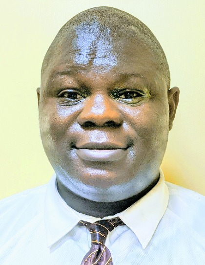

Omikunle Timileyin Micheal | WDD 130
Hello! My name is Omikunle Timileyin Micheal and I am from Nigeria, Osun state, specifically from Ile-Ife. I am creating this website to showcase my skills as I am studying Computer Information Technology at Brigham Young University Rexburg, Idaho. Are you searching for a highly skilled and passionate Computer Information Technology expert in the field of computer programming or IT specialist? Look no further than me!
As a Computer Information Technology major, I have an insatiable thirst for knowledge and an unwavering passion for technology and programming. Through my studies, I have gained expertise in computer networks, programming languages, database management systems, and software development. My practical experience through internships and projects has allowed me to apply my knowledge in real-world situations, enhancing my skills in the field.